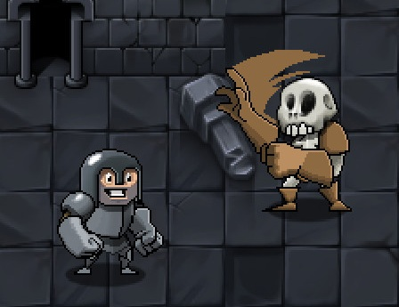
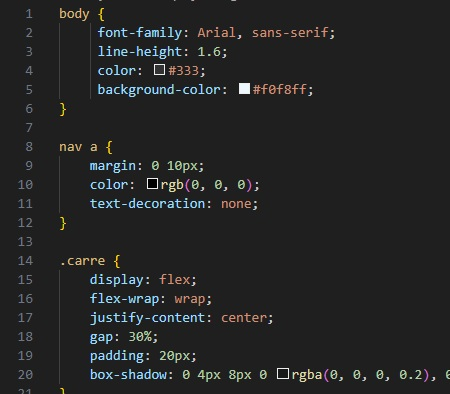

A propos de moi
Toujours étant proche de l'informatique depuis mon enfance, ce n'est que récemment que je me suis lancé officiellement sur cette carrière pour pouvoir me lancer dans le développement, ayant été un électricien auparavant.

Informaticien Débutant
Mes projets
Developpement sur Gamemaker
J'ai découvert un moteur de création de jeux gratuit il y a quelques semaines,
je compte plonger dans l'univers de développement de jeu vidéo le plus tôt possible
pour pouvoir commencer de bon train pour le Travail de Fin d'Etudes.
Etant gratuit, possédant beaucoup de ressources de développements et de tutoriels, Gamemaker
vise à apprendre la création de jeu vidéo au plus grand nombre de manière simplifiée.
Je compte paufinner mes capacités web en travaillant sur de divers petits
projets HTML et CSS, et éventuallement intégrer Javascript pour des animations
fonctionnalités plus avancés.
Mes capacités sont très limités pour le moment, j'essaye d'utiliser l'assistance IA
le moins possible (sans autant l'interdire) pour me déveloper naturellement.
Projet Web lors des vacances
Autres projets personnels
D'autres projets a caractère plus personnels seront en cours pendant le congé scolaire et au delà, l'objectif étant d'établir de bonnes habitudes dans le monde du travail mais aussi au côté personnel.
Mes Compétences
- HTML
- CSS
- JavaScript
- Technicien PC
Mes langues
- Français - Langue natale
- Anglais - Appris sur Internet, compétences appronfondies via des formations
Mes formations
- 2018 - Obtention du VCA, opérations en environnement à haut risque.
- 2019 - Complément de maintenance et dépannage d'installations éléctriques
- 2023 - Certification Langues, Néerlandais, Niveau Elementaire
- 2023 - Certification Langues, Anglais, Niveau Intermédiaire
Contact